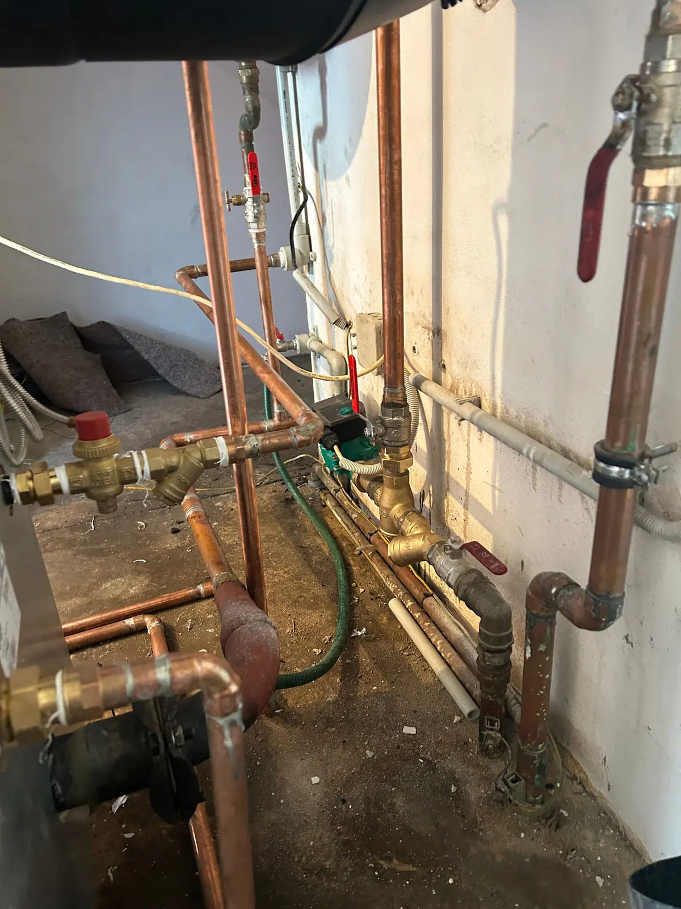
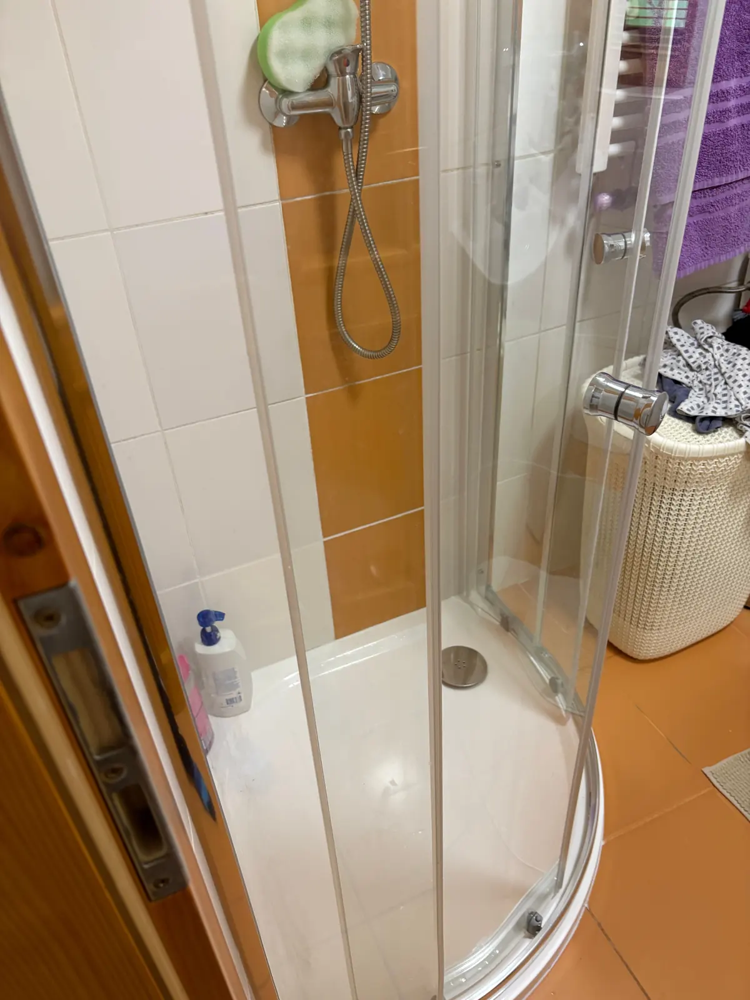

Reference
Fotografie zakázek, které jsem dělal. Fotím jen s vědomím a souhlasem zákazníka a tak, aby na snímku nebylo poznat, o čí byt jde. Klimatizace na fotografiích jsem zajistil ve spolupráci s firmou KLIMAKOL.








Chcete něco podobného?
Zavolejte a popište, co potřebujete. Cenu se dozvíte předem.